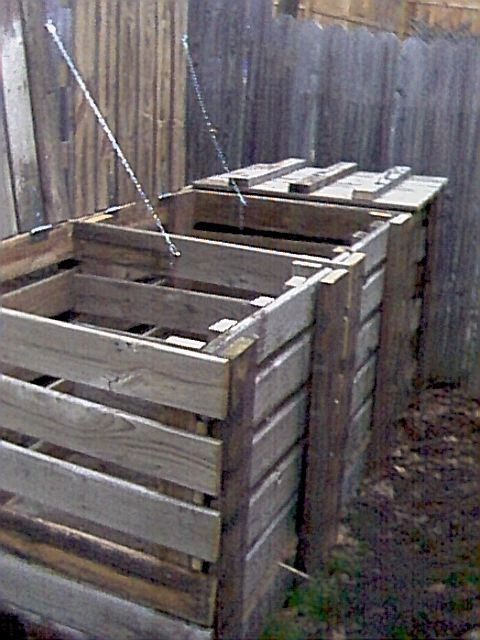
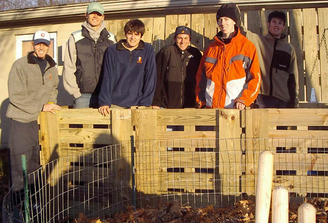
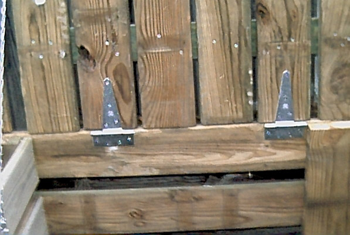
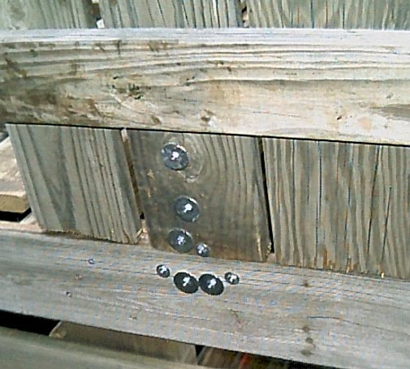
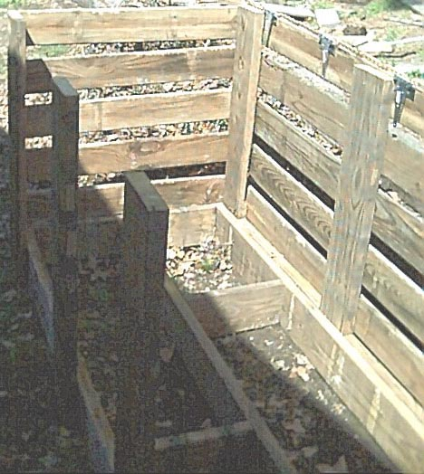
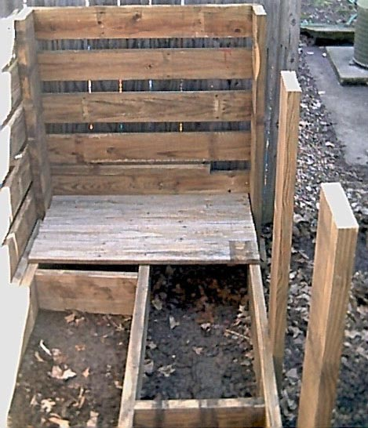
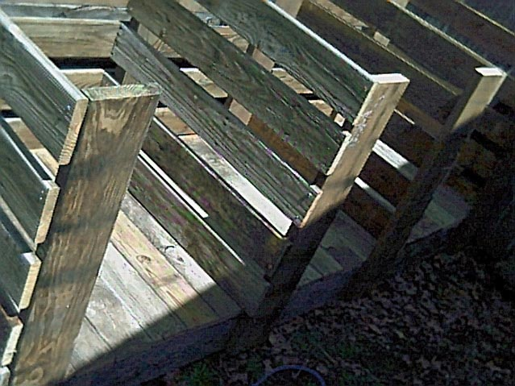
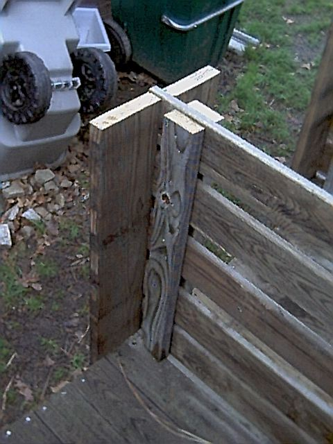

Three Bin Compost Bin

Several students from Bucknell University's
Management 101,
Fall 2004 Company A who used my design, a testament to the reliability of its design.

I have the plans as a PDF and as a PPT. The following instructions should be used in
conjunction with the PDF document.
Matt Uffalussy was kind enough to put together a shopping list for materials:
https://docs.google.com/spreadsheet/ccc?key=0AoRn26gDe4HzdFNFeWxiTnRSc1RjMERWTnN1ZGpwMlE#gid=0
Before beginning this project please take a look at the following pages. These pages contain things about simple
carpentry I learned. When you are finished you can visit the Main Page:
1) Wood Is Not The Size They say it is
2) The right tools are important, and they really
don't cost that much
3) Technique, a few hints and tricks help make the
job go easier.
As with ANY engineering project the specifications are important. If you don't get the specs correct
then when you finish you may not meet the needs of what you are trying to accomplish. Rose told me what
was important about this project. She wanted access from the front so that when the compost was finished
it was east to get to, a lid that could be lifted so that compost could be moved from one bin to another
(with the front open). Finally air had to be allowed to the compost itself as air is part of the compost process.
We discussed how this would look and Rose decided a removable front and a hinged lid would fit the bill.
Room between the slats on the side would allow airflow to the compost. Having multiple bins would allow
more compost to cook at the same time. We also looked at what other people had done.
We are in a
residential neighborhood so the bins have to be covered to discourage dogs and other critters from
investigating our kitchen scraps. Having three compartments allows us turn the compost
regularly from one compartment into the next, keeping two piles cooking at all times. Usually
by the time we're ready to start a third one, it's time to empty the first bin and work it into a
garden bed. Because they are tall bins, the front panel slides out making it quite easy to
get in with a pitch fork to turn the pile, and also unload it.
This one is a beast when completely assembled, so before the final pieces are attached be sure you
place it where you think it will stay for a while. If it must be moved, try rolling it on
sections of 3" PVC pipe (See the hints page).
Page 1 - First we make the bottom frame as seen at the top of page 1. Cut three
ea 1.5 X 7.25 X 15.75" boards, cut two 1.5 X 7.25 X 33" boards, cut two
1.5 X 7.25 X 110" boards and cut 1 ea 1.5 X 7.25 X 107" board. You
should have eight boards. Find a nice level surface with a step that is long.
Place the 1.5 X 7.25 X 110" board up against the step. Next put the two
1.5 X 7.25 X 33" boards up against the 1.5 X 7.25 X 110" board. Finally
put the 1.5 X 7.25 X 110" board up against the two 1.5 X 7.25 X 33" boards.
You should have what looks like the top half of page 1 minus the interior frame
boards. Using 2 or 2.5" deck screws and keeping this frame square, screw the front 1.5
X 7.25 X 110" board into the two 1.5 X 7.25 X 33" boards. Turn the entire
frame around so that what was the front broad is now braced against the step and screw
the other 1.5 X 7.25 X 110" board into the two 1.5 X 7.25 X 33" boards.
You should now have a nice square. Take the four interior boards and arrange them
as shown in the top of page 1. Now secure all these together with your deck
screws. Now cut eight each 1.5 X 7.25 X 43" boards. Screw these in
place on the front and on the back. They attach at the same exact place on the front
as on the back. Please note that the center boards are only 36" apart whereas
the distance between the end pieces and the center pieces is 37".
Page 2 - Now cut five 1 X 5.5 X 112" boards. Attach these to the back. I
used 2" deck screws for this. Now attach the four 6" hinges as shown.
I attached these with bolts and nuts, with very large fender washers under the nut to
distribute the forces over a larger area of the boards. See the next two pictures
for what the hinges look like when the hinges are attached to the lids. You should
now have something that looks like the second page.


Page 3 - Now cut ten each 1 X 5.5 X 39" boards. Attach five of these to each
end. All three sides should now have slats. The compost bin should begin to look
something like:

Page 4 - If you look at the back of the compost bin you will see that there is a gap between
the back slats and the frame. Cut two 1.5 X 3.5 X 30" boards and one 1.5 X 3.5
X 22" board. These boards are attached to the bottom frame to keep your
composting from falling out the back. When you attach these boards you cane either
attach them so that they are flush with the frame, or you can try to have them raised about
1" so that when you put the floor boards in they will be flush with the floor boards
. Next cut twenty 1 X 5.5 X 36" boards for the floor. When you cut these
boards, you should make them a little less than 36" (say 1/8" or 1/4") rather
than making them too long. They will not fit well with the other boards if they are too
long. Attach them to the bottom frame. Your compost bin should now begin to look
like:

Page 4 (Continued) - Now cut ten 1 X 5.5 X 39" boards for the center divider slats.
Attach these to the front and back 43" boards.

Page 4 (Continued) - Now cut two 1.5 X 7.25 X 43"
boards. These will attach to the frame and (as best as you can) to the center divider
slats. Next cut six 1.5 X 3.5 X 35" boards for the back support. These provide
a back stop for the doors that slide down the front. Your bin should now look something like:

Page 5 - Now make the three top lids and the three front doors. For each lid cut six 1 X 5.5
X 40" boards. Then cut three 1.5 X 3.5 X 36" boards. Place the six 1 X 5.5
X 40" boards on the ground, with 0.5" space between each board. Place the three 1
X 3.5 X 36" boards on top as shown on page 5. I used a scrap poece of board to make
absolutely sure that the tops of all the boards were all lined up with each other before I
secured them with the deck screws. Using 2" deck screws, secure the three
boards to the six 1 X 5.5 X 40" boards with one screw per board (i.e. 18 screws total).
This is just to hold all the boards toogether. Now flip it other and screw together the boards
with two screws everywhere the boards touch, about 36 more screws. Now make two more lids
just like this. Make the three doors in pretty much the same way except please note
that the size of the boards for the doors are five 1 X 5.5 X 35.5" boards and three 1.5 X
3.5 X 34.5" boards and the spacing is a little different (see the plan). Attach the
three lids to the back of the compost bin. See the second set of pictures on this page for
what the hinges should look like. To keep the lids from flopping back and breaking the wood
that the hinges are attached to, put a chain with a eye screw screwed into the frame and into the
lid. You will need to use something like a
quick link to hold the
chain to the eye screw. Put the doors on front and you should now have a compost
bin that looks like the first picture.
Main Page